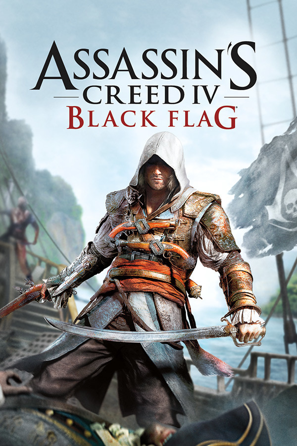
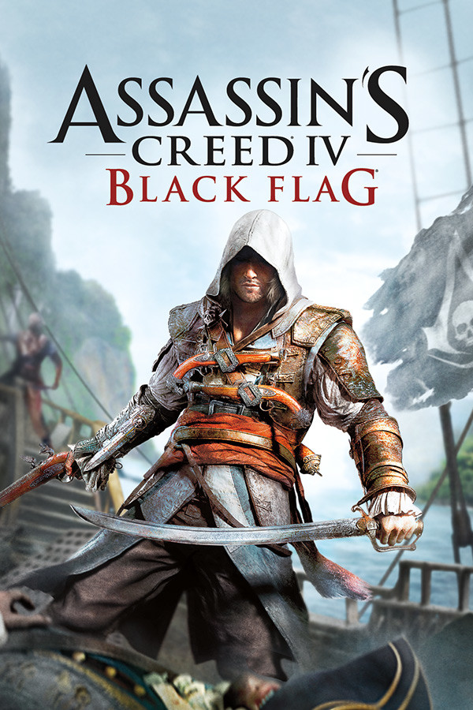

shot
| assassins creed  |
|
|
| call of duty |
||
| counter strike |
||
| igi |
این بازی توسط استودیوی یوبیسافت مونترآل توسعه یافته و به وسیلهٔ یوبیسافت منتشر شدهاست. اساسینز کرید در نوامبر ۲۰۰۷ برای کنسولهای پلیاستیشن ۳ و اکسباکس ۳۶۰ انتشار یافت و نسخهٔ مایکروسافت ویندوز آن نیز در ۸ آوریل ۲۰۰۸ منتشر شد. نسخهٔ تبدیلشده و پیشدرآمد این بازی برای نینتندو دیاس به نام اساسینز کرید: تاریخچه الطائر در ۵ فوریه ۲۰۰۸ عرضه شد. داستان این بازی در دو زمان ۲۰۱۲ میلادی و جنگ صلیبی سوم (۱۱۹۱) در سرزمین مقدس رخ میدهد. شخصیت اول آن در زمان حال، فردی به نام دسموند مایلز و در زمان گذشته، یکی از اعضای فرقه حشاشین به نام الطائر بن لا أحد است. دسموند زندگی جدش را با کمک دستگاهی به نام «آنیموس» شبیهسازی و بازآفرینی میکند. الطائر، از اجداد او، یک حشاشی ماهر در دوران جنگ صلیبی سوم بوده که به دلایلی آبروی خویش را در جامعه حشاشین از دست میدهد و برای بازگردانی این آبروی از دست رفته، باید مأموریتهای متفاوتی را به اتمام برساند. بازیکن آزادانه الطائر را در چهار شهر دمشق، اورشلیم، عکا و مصیاف کنترل میکند. انجمن مخفی حشاشین از نزاریه و رمان الموت الهام گرفته شدهاست. این بازی اولین نسخه از مجموعه بازیهای اساسینز کرید بهشمار میرود بازی بهطور کلی مورد ستایش قرار گرفت و در نقدها امتیازات خوبی دریافت کرد. منتقدین روایت داستان، جلوههای تجسمی، طراحی هنری و نوآوری در خلق یک مالکیت حقوقی را تقدیر کردند، اگرچه بازی به دلیل داشتن ماهیت تکراری گیمپلی مورد انتقاد قرار گرفت
مجموعه ندای وظیفه در ابتدا با توسعه اینفینیتی وارد، بر روی صحنههای جنگ جهانی دوم متمرکز شده بود. ندای وظیفه ۴: جنگاوری نوین (۲۰۰۷) یک محیط جدید و مدرن را معرفی کرد و ثابت کرد که جنگاوری نوین عنوان موفقیت در این مجموعه را ایجاد میکند. میراث این بازی در ایجاد نسخه بازسازی شده جنگاوری نوین که در سال ۲۰۱۶ منتشر شد، نفوذ گذار بود. پس از آن، دو مورد دیگر از بازیهای جنگاوری نوین با عنوان جنگاوری نوین ۲ (۲۰۰۹) و ۳ (۲۰۱۱) ساخته شد. مجموعه جنگاوری نوین مجدداً در سال ۲۰۱۹ با عنوان جنگاوری نوین بازراهاندازی شد. همچنین اینفینیتی وارد دو بازی خارج از زیر مجموعه جنگاوری نوین با عنوان اشباح (۲۰۱۳) و جنگهای بینهایت (۲۰۱۳) توسعه دادهاست. تریآرک جهان در جنگ (۲۰۰۸) را به عنوان آخرین بازی مبتنی بر جنگ جهانی دوم، قبل از انتشار بلک اپس (۲۰۱۰) را توسعه دادهاست که پس از آن باعث ایجاد زیر مجموعه بلک اپس شد. چهار ورودی دیگر از مجموعه با عنوان بلک اپس ۲ (۲۰۱۲)، ۳ (۲۰۱۵)، ۴ (۲۰۱۸)، و جنگ سرد (۲۰۲۰) توسط تریآرک ساخته شد و در ساخت جنگ سرد با ریون سافتور همکاری داشتهاست. اسلجهمر گیمز جزئی از توسعه دهندگان جنگاوری نوین ۳ بودهاست و همچنین دو عنوان جنگاوری پیشرفته (۲۰۱۵) و جنگ جهانی دوم (۲۰۱۷) را توسعه دادهاست. تا فوریه ۲۰۱۶ این مجموعه بیش از ۲۵۰ میلیون نسخه فروش داشتهاست. همچنین فروش تمام بازیهای ندای وظیفه بیش از ۱۵ میلیارد دلار بودهاست
Counter Strike یکی دیگر از بازیهای معروف و پرطرفدار بازی جنگی میباشد که شما هم اکنون میتوانید به راحتی و بدون پرداخت هیچ هزینه ای به بازی بپردازید . همانطور که میدانید این بازی را میتوانید به راحتی به صورت آنلاین با دیگر دوستان و … بازی کنید که از ویژگی های مهم بازی است همچنین از جمله بازیهایی است که در گیم نت ها مورد علاقه بسیاری است و مسابقات کشوری در این بازی برگزار میشود !بازی کامپیوتری Counter Strike 1.8 2010 را با اینکه اکثرا آن را میشناسند من توضیح مختصری میدهم : بازی در ابتدا بین دو گروه شروع میشود که یک گروه تروریست هستند و یک گروه پلیس که وظیفه جنگ میان دو گروه است و هرکس در میان این دو گروه تعداد نفرات بیشتری بکشد رتبه اش بالا تر میرود. امتیاز گروه ها بر اساس کشتن تمام افراد هر گروه داده میشود. در یک سری از زمین ها تروریست ها میتوانند بمب بگذارند و ضد تروریست ها ( پلیس ها) باید بمب خنثی کنند. در کل یک بازی جذاب و در عین حال ساده است.

یک بازی رایانهای در سبک شخص اول محصول شرکت اینرلوپ استودیوز (Innerloop Studios) است که در دسامبر ۲۰۰۰ توسط شرکت ایدوس اینتراکتیو (Eidos Interactive) انتشار یافت. به محض انتشار بازی، نظرات مختلفی به دلیل کاستیهای بازی دریافت کرد، از جمله ضعف هوش مصنوعی بازی، نداشتن گزینه ذخیره وسط بازی و نداشتن ویژگیهای بازی چند نفره. با این حال از طراحی صدا و گرافیک آن ستایش شده است. همچنین به خاطر استفاده از موتور بازی اختصاصی که قبلاً در Innerloop's Joint Strike Fighter استفاده شده بود، مورد تحسین قرار گرفت. قسمت دوم این بازی با نام آی.جی.آی ۲: ضربه پنهان (I.G.I.-2: Covert Strike) در فوریه ۲۰۰۳ انتشار یافت.